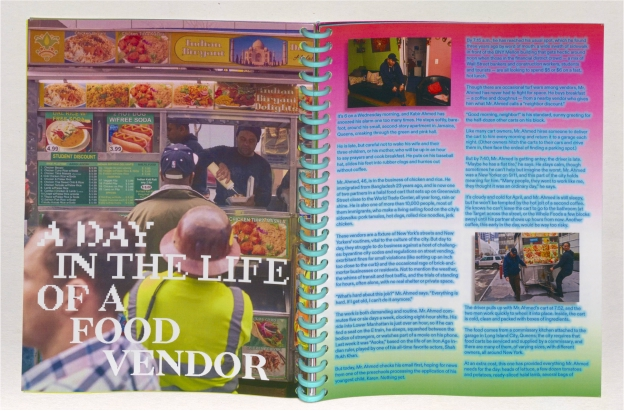
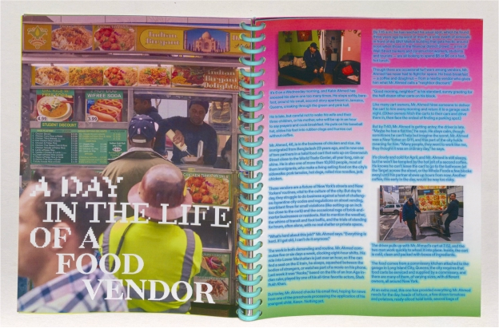

Publication Design | Visual Identity
Food has always been used as a medium to connect people. This book
is meant to highlight that New York’s street food vendors play a
crucial role in a New Yorker’s daily life whether they notice it or
not. By combining photography with articles on history, legalities,
and economic impacts, I’m creating a multifaceted narrative that
speaks to the significance of street food in NYC. This approach
acknowledges street food vendors as essential contributors to the
city's cultural and economic landscape.

 

The purpose of this book is meant to capture not just the visuals but also the deeper significance of street food in New York City. By combining my photographs with articles on topics like the history of street food vendors, legal permits, and their economic contributions, I want to create a narrative that speaks to how integral these vendors are to the cultural and economic landscape of the city. Food, to me, is a powerful medium for connection, and through this project, I aim to highlight how New York, as a cultural melting pot, is united by its food.